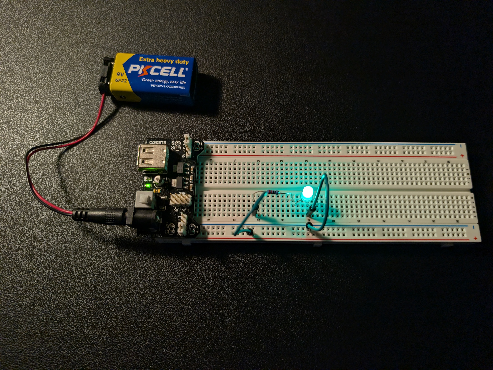
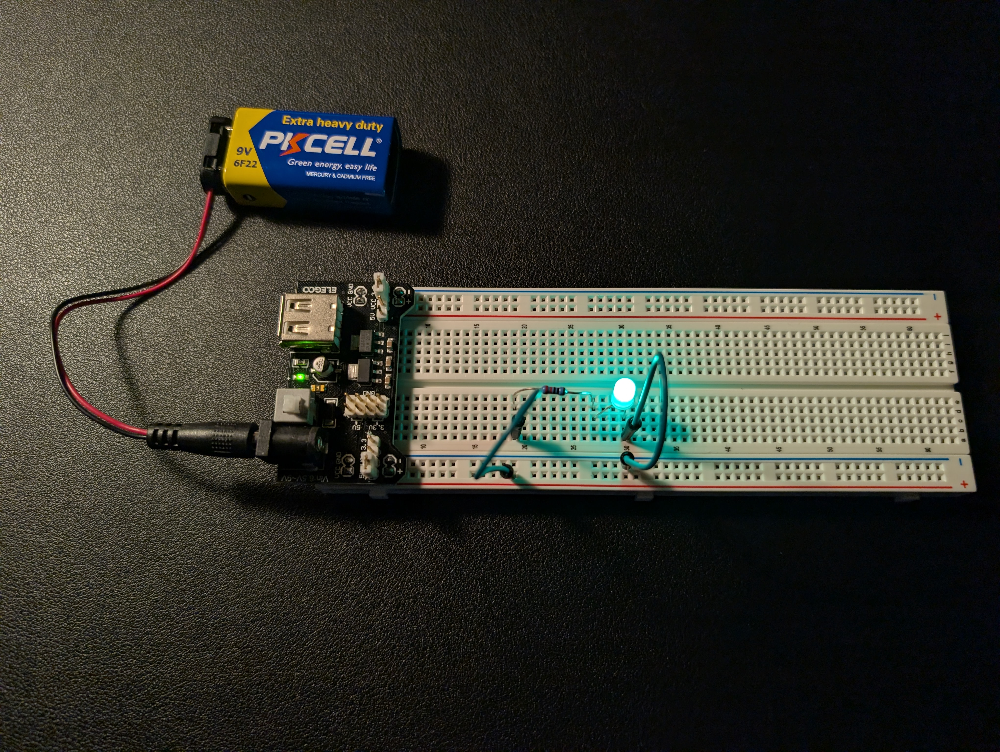
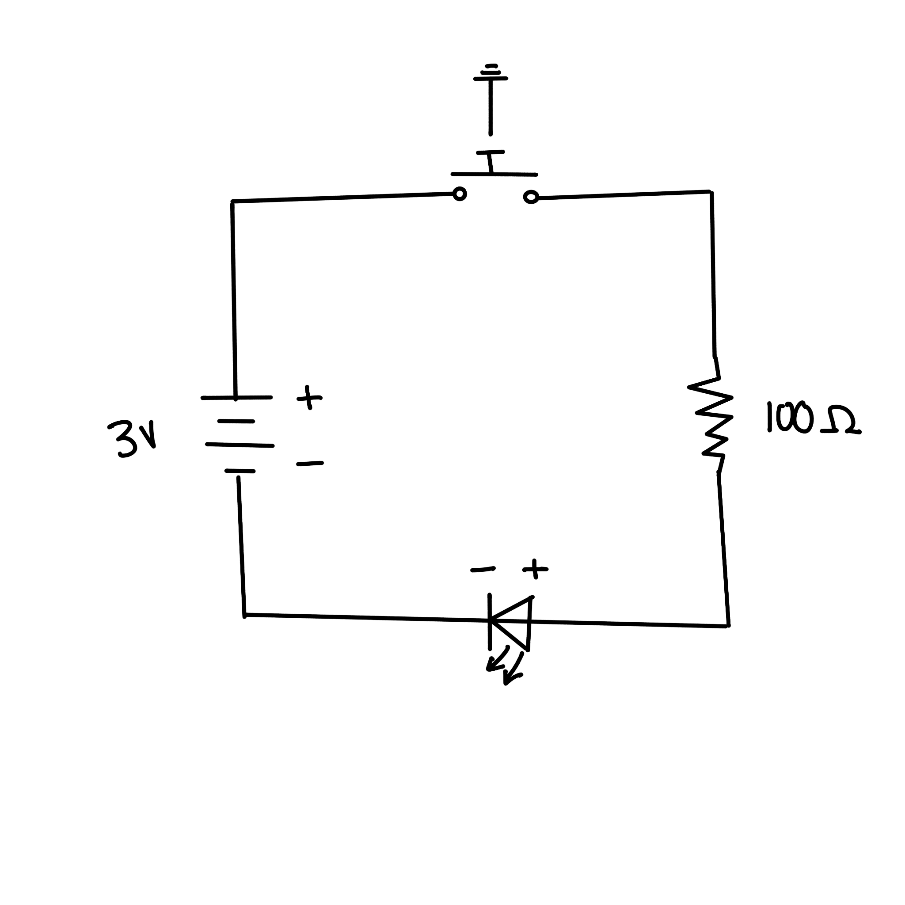

Materials Used
* Button also used but not pictured.

In this lab, I learned how to set up a 5V and 3.3V LED circuit using a power supply module, breadboard, resistors, and a button. I also learned how to use a button to control the LED, as well as how to set up a circuit where pressing the button turns off the LED.
* Button also used but not pictured.


 

Button-Controlled LED Circuit

Button Press Turns Off LED Circuit
This lab helped me remember the basics of how to work with circuits, power supplies, breadboards, and other components. I had a few struggles when it came to the multimeter, like when I was failing to measure the power source voltages and realized that the probes weren't fully attached to the multimeter. I found the button part of the circuit to be challenging, but what I struggled the most with was explaining what I was doing through schematics. In the future, I want to get better at creating schematics through this class!